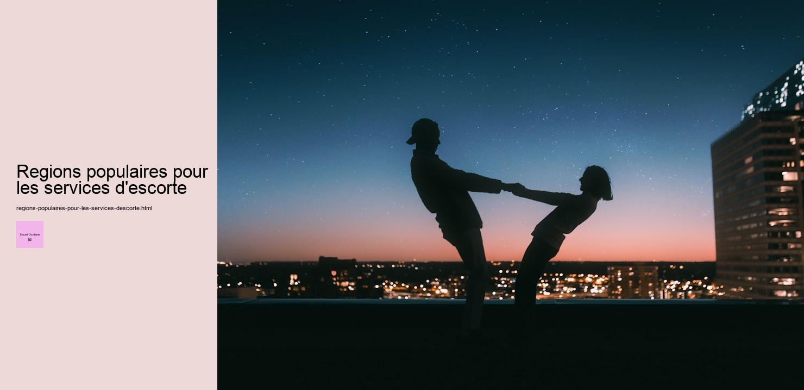

Les régions populaires pour les services descorte, sujet souvent entouré de mystère et de curiosité, révèlent une dimension unique de la société contemporaine. En France, comme dans de nombreux autres pays, certaines villes et quartiers se distinguent par la concentration et la diversité des services descorte quils proposent. Pour comprendre ce phénomène, il est essentiel dexplorer les facteurs qui rendent ces régions particulièrement attractives, tant pour les prestataires que pour les clients.
Paris, la capitale, est sans doute la première ville qui vient à lesprit. Ville lumière, elle attire des millions de touristes chaque année. Mais derrière ses monuments emblématiques et ses rues romantiques, Paris abrite un monde discret où les services descorte prospèrent. Les quartiers chics comme le 8ème arrondissement, avec ses hôtels de luxe et ses restaurants haut de gamme, sont des lieux de prédilection. Les clients, souvent des hommes daffaires ou des touristes aisés, recherchent laccompagnement de qualité qui complète leur expérience parisienne.
Cependant, Paris nest pas la seule ville où ces services sont en vogue. Marseille, avec son ambiance méditerranéenne et sa vie nocturne animée, est également une région populaire. La diversité culturelle de la ville, combinée à son statut de port majeur, attire un public varié. Les escorts à Marseille profitent de cette mixité pour offrir des services adaptés à des goûts et des exigences différents.
Lyon, connue pour sa gastronomie et son patrimoine culturel, est une autre ville où les services descorte sont en demande. Le quartier de la Presquîle, en particulier, est réputé pour ses bars et clubs qui attirent une clientèle internationale. Les escorts à Lyon savent tirer parti de cet afflux constant de visiteurs pour offrir des expériences uniques.
Dautres villes comme Nice et Bordeaux ne sont pas en reste. Nice, avec sa Côte dAzur scintillante et son climat agréable, voit fleurir des services descorte qui profitent du flot incessant de touristes. Bordeaux, quant à elle, allie le charme de ses vignobles à une scène urbaine dynamique, attirant ainsi une clientèle variée.
Au-delà des aspects géographiques, il est crucial de reconnaître les facteurs socio-économiques et culturels qui influencent ces régions populaires. Les villes mentionnées sont souvent des centres économiques où les affaires internationales prospèrent, créant une demande pour des services qui allient discrétion et sophistication. De plus, la diversité culturelle et louverture desprit dans ces régions favorisent une acceptation plus large de ces professions.
En conclusion, les régions populaires pour les services descorte en France sont le reflet dune société en constante évolution. Elles montrent comment différents éléments – économiques, culturels et géographiques – sentrelacent pour créer des environnements où ces services peuvent sépanouir. Bien que souvent discrets et entourés de mystère, ils font partie intégrante du tissu urbain et social de ces grandes villes.
Services d'escorte en Occitanie